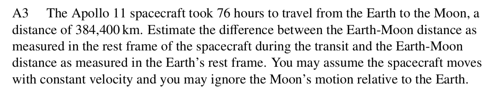
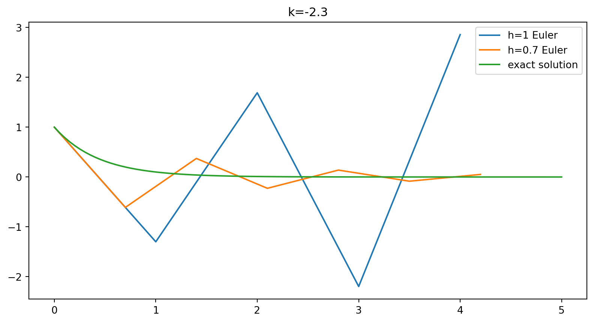
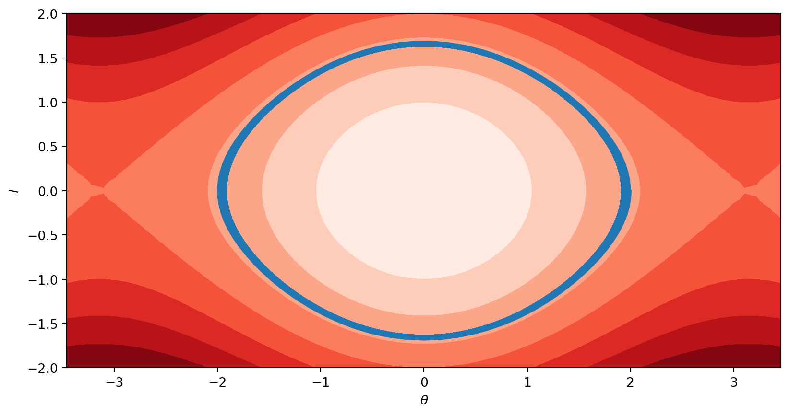
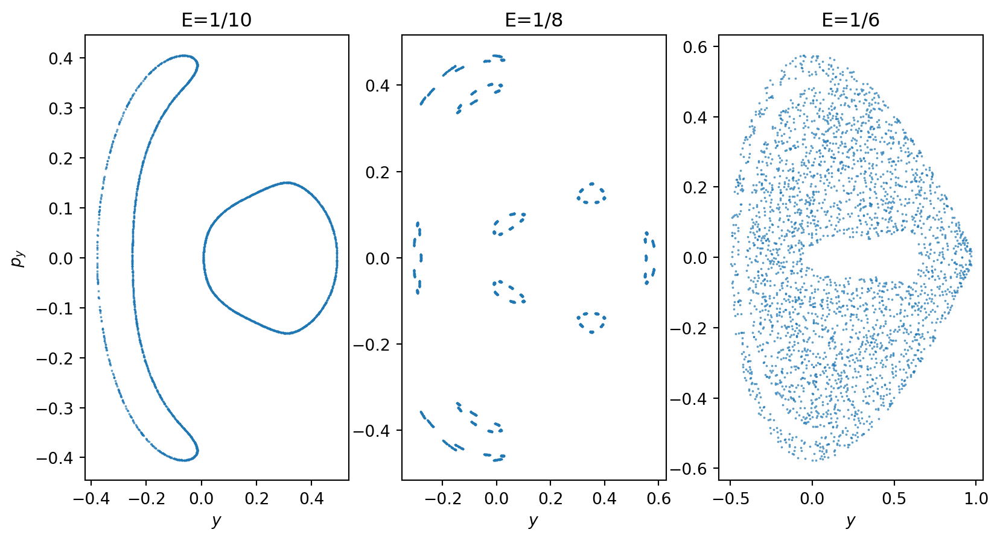

Falsebin functionPython allows for arbitrarily large integers
No possibility of overflow or rounding error
--------------------------------------------------------------------------- OverflowError Traceback (most recent call last) Cell In[6], line 2 1 import numpy as np ----> 2 np.int64(2**100) OverflowError: Python int too large to convert to C long
Since NumPy is using C the types have to play nicely
Range of integers that represented with 32 bit numpy.int32s is \(\approx\pm 2^{31} \approx \pm 2.1 × 10^9\) (one bit for sign)
64 bit numpy.int64s lie in range \(\approx\pm 2^{63} \approx \pm 9.2 × 10^{18}\)
Apart from the risk of overflow when working NumPy’s integers there are no other gotchas to worry about
\(0.1 + 0.2 \neq 0.3\) in Python is that specifying a real number exactly would involve an infinite number of bits
Any finite representation necessarily approximate
Representation for reals is called floating point arithmetic
Essentially scientific notation
\[\text{significand} \times \text{exponent} \]
Requires choice of base, and Python’s floating point numbers use binary
Numbers with finite binary representations behave nicely
decimal module:A specification for floating point numbers must give
With one bit \(s\) for overall sign, a number then has form \((-1)^s\times c \times b^q\).
Smallest positive nonzero number that can be represented is \(b^{1 + \text{emin} - p}\) (corresponding to the smallest value of the exponent) and largest is \(b^{1 + \text{emax}} - 1\).
\[ (-1)^s\times c \times b^q \]
Representation isn’t unique: (sometimes) could make significand smaller and exponent bigger
A unique representation is fixed by choosing the exponent to be as small as possible.
Representing numbers smaller than \(b^{\text{emin}}\) involves a loss of precision, as number of digits in significand \(<p\) and exponent takes its minimum value (subnormal numbers)
If we stick with normal numbers and a \(p\)-bit significand, leading bit will be 1 and so can be dropped from the representation: only requires \(p-1\) bits.
Specification for floating point numbers used by Python (and many other languages) is contained in the IEEE Standard for Floating Point Arithmetic IEEE 754
Default Python float uses 64 bit binary64 representation (often called double precision)
Here’s how those 64 bits are used:
Another common representation is 32 bit binary32 (single precision) with:
finfo(resolution=1e-15, min=-1.7976931348623157e+308, max=1.7976931348623157e+308, dtype=float64)Note that \(2^{-52}=2.22\times 10^{-16}\) which accounts for resolution \(10^{-15}\)
This can be checked by finding when a number is close enough to treated as 1.0.

Infinity and NaN (Not a Number)Newton’s fundamental discovery, the one which he considered necessary to keep secret and published only in the form of an anagram, consists of the following: Data aequatione quotcunque fluentes quantitates involvente, fluxiones invenire; et vice versa. In contemporary mathematical language, this means: “It is useful to solve differential equations”.
Vladimir Arnold, Geometrical Methods in the Theory of Ordinary Differential Equations
\[ \frac{dx}{dt} = f(x, t) \]
Cannot be solved for general \(f(x,t)\)
Formulating a system in terms of differential equations represents an important first step
Numerical analysis of differential equations is a colossal topic in applied mathematics
Important thing is to access existing solvers (and implement your own if necessary) and to understand their limitations
\[ \frac{dx}{dt} = f(x, t) \]
\[ \frac{dx}{dt}\Bigg|_{t=t_j} \approx \frac{x_{j+1} - x_j}{h} \]
\[ x_{j+1} = x_j + hf(x_j, t_j) \]
\[ x_{j+1} = x_j + hf(x_j, t_j) \]
\[ \frac{dx}{dt}\Bigg|_{t=t_j} \approx \frac{x_{j+1} - x_j}{h} \]
So that update rule is explicit formula for \(x_{j+1}\) in terms of \(x_j\)
If we had used backward derivative we would end up with backward Euler method \[ x_{j+1} = x_j + hf(x_{j+1}, t_{j+1}) \] which is implicit
This means that the update requires an additional step to numerically solve for \(x_{j+1}\)
Although this is more costly, there are benefits to the backward method associated with stability (as we’ll see)
In Euler scheme we make an \(O(h^2)\) local truncation error
To integrate for a fixed time number of steps required is proportional to \(h^{-1}\)
The worst case error at fixed time (the global truncation error) is \(O(h)\)
For this reason Euler’s method is first order
More sophisticated methods typically higher order: the SciPy function scipy.integrate.solve_ivp uses fifth order method by default
\[ \begin{align} k_1 &\equiv h f(x_j,t_j) \\ k_2 &\equiv h f(x_i + k_1/2, t_j + h/2) \\ x_{j+1} &= x_j + k_2 +O(h^3) \end{align} \]
\(O(h^2)\) error cancels!
Downside is that we have two function evaluations to perform per step, but this is often worthwhile
More computer time \(\longrightarrow\) smaller \(h\) \(\longrightarrow\) better accuracy?
This ignores machine precision \(\epsilon\)
Rounding error is roughly \(\epsilon x_j\)
If \(N\propto h^{-1}\) errors in successive steps treated as independent random variables, relative total rounding error will be \(\propto \sqrt{N}\epsilon=\frac{\epsilon}{\sqrt{h}}\)
Will dominate for \(h\) small
Euler method may be unstable, depending on equation
Simple example:
\[ \frac{dx}{dt} = kx \]
import numpy as np
import matplotlib.pyplot as plt
def euler(h, t_max, k=1):
"""
Solve the equation x' = k x, with x(0) = 1 using
the Euler method.
Integrate from t=0 to t=t_max using stepsize h for
num_steps = t_max / h.
Returns two arrays of length num_steps: t, the time coordinate, and x_0, the position.
"""
num_steps = int(t_max / h)
# Allocate return arrays
x = np.zeros(num_steps, dtype=np.float32)
t = np.zeros(num_steps, dtype=np.float32)
x[0] = 1.0 # Initial condition
for i in range(num_steps - 1):
x[i+1] = x[i] + k * x[i] * h
t[i+1] = t[i] + h # Time step
return t, x
\[ x_{j+1} = x_j(1 + hk) \]
Region of stability is \(|1 + hk|\leq 1\)
You can check that backward Euler method eliminates the instability for \(k<0\).
Coming up with integration schemes is best left to the professionals
scipy.integrate.solve_ivp provides a versatile API
All these integration schemes apply to systems of first order differential equations
Higher order equations can always be presented as a first order system
\[ m\frac{d^2 \mathbf{x}}{dt^2} = \mathbf{f}(\mathbf{x},t) \] which is three second order equations
\[ \begin{align} \frac{d\mathbf{x}}{dt} &= \mathbf{v}\\ m\frac{d \mathbf{v}}{dt} &= \mathbf{f}(\mathbf{x},t) \end{align} \]
\[ \ddot \theta = -\sin\theta \] which can be cast as
\[ \begin{align} \dot\theta &= l\\ \dot l &= -\sin\theta \end{align} \]
Then call solve_ivp
Option dense_output=True specifies that a continuous solution should be found
Returned object pendulum_motion has sol property that is an instance of OdeSolution. sol(t) returns the computed solution at \(t\) (this involves interpolation)
\[ E(\theta, l) = \frac{1}{2}l^2 - \cos\theta \]

Thickness of blue line is due to variation of energy over \(t=1000\) trajectory (measured in units where the frequency of linear oscillation is \(2\pi\))
We did not have to specify a time step
This is determined adaptively by solver to keep estimate of local error below atol + rtol * abs(y)
Default values of \(10^{-6}\) and \(10^{-3}\) respectively
Monitoring conserved quantities is a good experimental method for assessing the accuracy of integration
Alternative dense_output=True is to track “events”
User-defined points of interest on trajectory
Supply solve_ivp with functions event(t, x) whose zeros define the events. We can use events to take a “cross section” of higher dimensional motion
\[ \begin{align} \dot x &= p_x \\ \dot p_x &= -x -2\lambda xy \\ \dot y &= p_y \\ \dot p_y &= - y -\lambda(x^2-y^2). \end{align} \]
Example of Hamilton’s equations
Phase space is now four dimensional and impossible to visualize.
\[ E = \frac{1}{2}\left(p_x^2+p_y^2 + x^2 + y^2\right) + \lambda\left(x^2y-\frac{1}{3}y^3\right) \]
\[ J = x p_y - y p_x \]
\[ E = \frac{1}{2}\left(p_y^2 + y^2\right) -\frac{\lambda}{3}y^3 \]
\[ p_x = \sqrt{2E-y^2-p_y^2 + \frac{2\lambda}{3}y^3} \]
def henon_heiles(t, z, 𝜆):
x, px, y, py = z
return [px, -x - 2 * 𝜆 * x * y, py, -y - 𝜆 * (x**2 - y**2)]
def px(E, y, py, 𝜆):
return np.sqrt(2 * E - y**2 - py**2 + 2 * 𝜆 * y**3 / 3)
def section(t, y, 𝜆): return y[0] # The section with x=0
t_max = 10000
𝜆 = 1
hh_motion = []
for E in [1/10, 1/8, 1/6]:
hh_motion.append(solve_ivp(henon_heiles, [0, t_max], [0, px(E, 0.1, -0.1, 𝜆), 0.1, -0.1], events=section, args=[𝜆], atol=1e-7, rtol=1e-7))